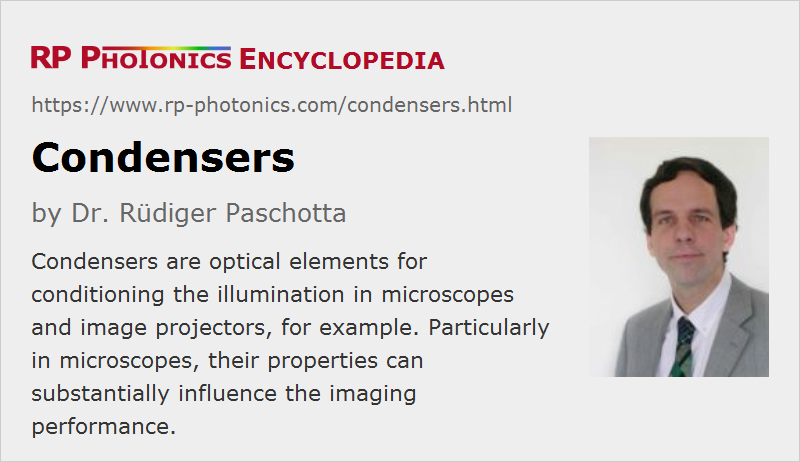

Condensers
Definition: lenses or lens systems for conditioning light from an illumination source
More general term: lenses
German: Kondensoren
Categories: general optics, vision, displays and imaging
How to cite the article; suggest additional literature
Author: Dr. Rüdiger Paschotta
A condenser is an optical device which is used for conditioning illumination light, for example in an optical microscope or an image projector. Typically, it contains one or more lenses and a diaphragm. Even multi-lens condensers are often called condenser lenses.
Microscope Condenser
A microscope condenser can have a substantial influence on the imaging performance of the instrument. Several different aspects need to be considered:
Image Brightness and Numerical Aperture
For a high image brightness, a condenser should send as much as possible of the available illumination light to the specimen, and this under conditions where the light is usable for image formation. In bright field transmission microscopy, for example, one should create a light cone where the range of propagation angles approximately matches the numerical aperture of the used objective (or is slightly smaller):
- Obviously, light which either transmits the sample plane at locations outside the observed object or cannot enter the objective would not be useful for image formation, and partially even disturbing (e.g. through glare from stray light).
- On the other hand, the numerical aperture of the condenser should not be lower than that of the objective, because otherwise the full image quality of the objective in terms of resolution, contrast and depth of field could not be realized.
The maximum numerical aperture (or its range) can often be read from an engraving on the condenser housing. There may also be a scale which indicates the related numerical aperture, so that it can be correctly chosen corresponding to the used objective.
Uniform Illumination
A condenser should provide uniform illumination of the object. It should be avoided, for example, to image the filament of an illumination lamp (typically a tungsten halogen lamp) onto the specimen, resulting into a severe modulation of illumination intensity. The common method of Köhler illumination avoids that problem by creating illumination conjugate planes which are well separated from the image-forming conjugate planes.
Aberrations
Substantial chromatic effects, resulting from chromatic dispersion of the optics, should be avoided for reaching optimum image quality. Therefore, achromatic condensers e.g. with three or four lenses have been developed.
Due to the high angular range of the illumination light to be handled, it can also be advantageous to have an aplanatic condenser or a condenser with an aspheric lens which minimizes spherical aberrations. Aspheric condensers allow for the realization of the largest angular opening, i.e., smallest f-numbers.
With more sophisticated condenser designs, it is also possible to correct for spherical and chromatic aberrations at the same time; one then has an achromatic compound condenser, also called aplanatic–achromatic condenser.
In simple microscopes, one still often uses the simple Abbe condenser with two lenses, which is not corrected for chromatic or spherical aberrations.
The applied correction (e.g. aplanatic or achromatic) can often be read from an engraving on the condenser housing.
Additional Components for Special Purposes
Additional items are required for modified microscopy techniques. For example, a dark field stop is required for dark field microscopy, and phase rings are applied for phase contrast microscopy. Such optical elements may be inserted in a slot between the illuminator and the condenser.
Adjustable Parameters
Obviously, the condenser system should usually be readjusted when the microscope objective is exchanged with one having a different magnification and numerical aperture. Thus, the axial position of the condenser and the diaphragm aperture diameter is often made adjustable. In particular, a condenser should allow some range of numerical apertures, usually adjusted with a variable diaphragm. For the highest numerical apertures (more than 0.95), where oil immersion objectives are used, immersion oil may also be required for the condenser. It is applied between the upper lens of the condenser and the lower surface of the specimen slide.
In some cases, where objectives with a wide range of magnifications can be used, it is even necessary to exchange condensers or at least to insert or remove the top lens, since the required condenser parameter ranges in terms of illuminated area and NA otherwise cannot be spanned.
Optical Power
For illumination systems with high power, there may be substantial heating effects in the condenser, which can exclude the use of plastic optics and even of cemented optics.
LED Illumination
Modern illumination systems increasingly make use of light emitting diodes (white LEDs), which produce far less heat than halogen lamps. Besides, their small dimensions also create opportunities for substantial simplification of the illumination optics (leading to entirely different condenser designs) and for various variations of illumination type. For example, one can realize diffuse illumination which minimizes detrimental effects of reflections, particularly on shiny samples.
Condensers for Other Devices
For use in various types of image projectors, and also requires condensers, but with requirements which are substantially different from those in microscopes. For example, the transmitted optical power may be substantially larger, but the required opening angle can be much smaller, and the properties of the used light sources also vary substantially. Because of those variable requirements, very different condenser designs are used in practice. In many cases, essentially some combination of lenses is used, sometimes including special forms like meniscus lenses and ball lenses. In some cases, one also uses microlens arrays (fly's eye arrays, or sometimes with cylindrical lenses) for achieving the required uniformity of illumination; see also the article on beam homogenizers.
Suppliers
The RP Photonics Buyer's Guide contains 12 suppliers for condensers. Among them:
Questions and Comments from Users
Here you can submit questions and comments. As far as they get accepted by the author, they will appear above this paragraph together with the author’s answer. The author will decide on acceptance based on certain criteria. Essentially, the issue must be of sufficiently broad interest.
Please do not enter personal data here; we would otherwise delete it soon. (See also our privacy declaration.) If you wish to receive personal feedback or consultancy from the author, please contact him e.g. via e-mail.
By submitting the information, you give your consent to the potential publication of your inputs on our website according to our rules. (If you later retract your consent, we will delete those inputs.) As your inputs are first reviewed by the author, they may be published with some delay.
See also: beam collimators
and other articles in the categories general optics, vision, displays and imaging
|  |
If you like this page, please share the link with your friends and colleagues, e.g. via social media:
These sharing buttons are implemented in a privacy-friendly way!